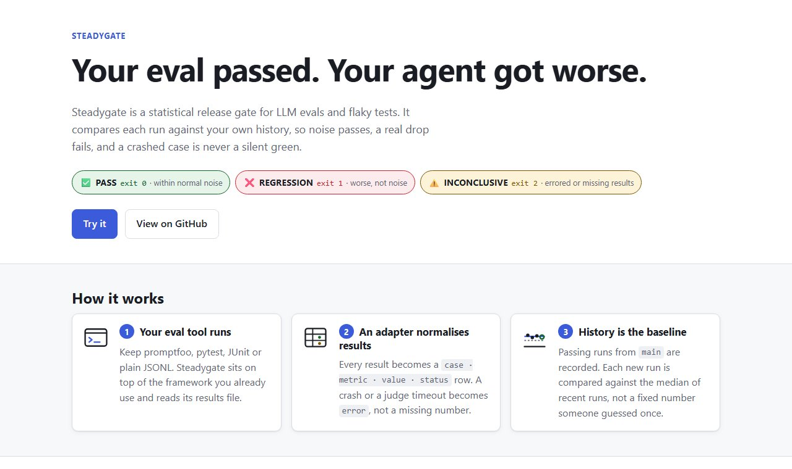

Steadygate
A statistical release gate for LLM agents, evals and flaky test suites.
- Problem
- A gate like "fail if score < 0.80" raises false alarms on noise, and passes quietly when half the suite crashed.
- Built
- A CLI that compares each run to your own history and answers PASS REGRESSION or INCONCLUSIVE. Errors and missing cases can never make a run pass.
- Evidence
- A live demo you can run in your browser, worked examples for noise, real regressions and crashed runs, and CI on every pull request.